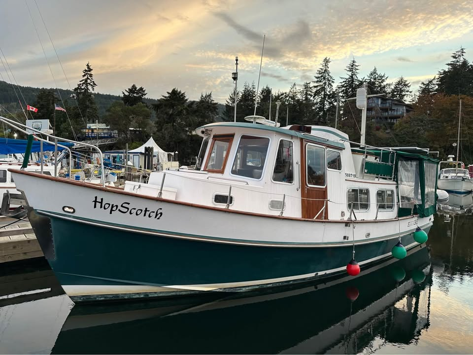

B-Atlas Boat Guide · TPMC-32-EA
Transpacific Marine Eagle 32 Pilothouse Transpacific Marine Trawler
1985–1998
The Eagle 32 Pilothouse is a Taiwan-built displacement cruiser built by Transpacific Marine, combining a tug-like raised pilothouse, wide side decks, teak interior and single diesel shaft drive. Model references document a full protective keel, separate shower and economical 7–8 knot operation.

- Length
- 32 ft
- Beam
- 11.5 ft
- Draft
- 3.33 ft
- Hull behaviour
- Displacement
- Fuel
- Diesel
- Propulsion
- Shaft
- Engine configuration
- Single diesel inboard; Lehman/Perkins 90 hp or Sabre 135 hp documented
- Boat family
- Trawler
- Construction
- Fiberglass hull and deck; Taiwanese-built examples vary in equipment and tankage by year and owner modification
Best for
- Couples seeking traditional pilothouse character in a compact boat
- Great Loop, Great Lakes and coastal displacement-speed cruising
- Owners comfortable maintaining an older Taiwan-built cruiser
Trade-offs
- Forward stateroom is compact
- Low-volume production means hull-specific documentation matters
- Published tankage varies between surviving examples
Known concerns
- No model-specific concern has been promoted to B-Atlas’s evidence threshold. This does not mean the model has no age-, condition- or hull-specific risks.
Inspection focus
- Verify hull, deck, windows and structural condition with a qualified survey
- Inspect propulsion, cooling, exhaust, steering and fuel systems and review service history
- Confirm actual dimensions, tank capacities and major equipment against the individual hull
- Review electrical upgrades and owner modifications for marine-standard installation
Continue researching
Related boat models
Carver 3207 Aft Cabin Aft Cabin
32 ft · Planing
Island Gypsy 32 Europa Europa
32 ft · Semi-Displacement
Island Gypsy 32 Sedan Sedan
32 ft · Semi-Displacement
Bayliner 3270 / 3288 Motor Yacht Explorer / Motor Yacht
32.08 ft · Semi-Displacement
Cheoy Lee 32 Trawler Trawler
31.92 ft · Semi-Displacement
Grand Banks 32 Sedan
31.92 ft · Semi-Displacement
About this record
B-Atlas preserves uncertainty: missing information remains unknown rather than being treated as a negative. Specifications and guidance describe the model record; individual boats can differ by year, equipment, refit and condition.